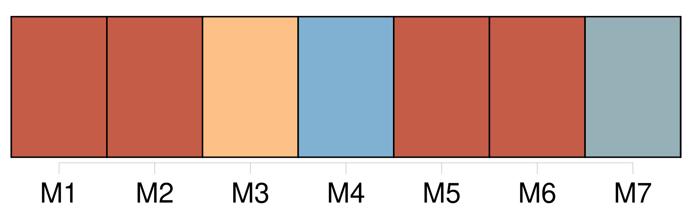
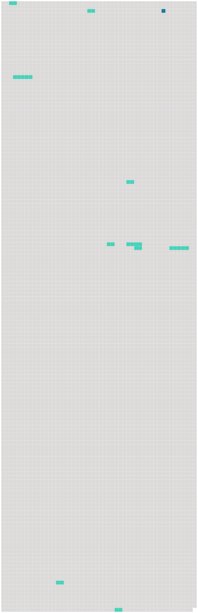

Longueur nb maillons : 11 mentions |
 |
Il tordit [son corps] , il serra les poings, il fronça les sourcils. [7 phrases] – L’ homme qui souffre peut diminuer son mal, en sachant d’ où il vient ; il l’ enferme par la pensée en un morceau de [son corps] , qui peut être guéri, arraché au besoin ; il en fixe les contours, il [le] sépare de lui. [40 phrases] – Et, parmi ce chaos, la lumière des yeux amis qui lui sourient, le flot de joie qui, du corps maternel, du sein gonflé de lait, se répand dans sa chair, la force qui est en lui et qui s’ amasse énorme, inconsciente, l’ océan bouillonnant qui gronde dans l’ étroite prison de [ce petit corps d’ enfant] [79 phrases] Il pleure toutes les larmes de [son corps] [50 phrases] [Son corps] lui suffit. [Quelle source d’ amusement] !! [3 phrases] – Et le reste [du corps] !! … Il continue l’ inspection de [tout ce qui lui appartient] [208 phrases] [Le corps] s’ engourdit de la douce chaleur, des fatigues du jour, du bruit des voix familières. [26 phrases] [Son corps] et son esprit sont toujours en mouvement, emportés dans une ronde qui tourne à perdre haleine. |
 |
Il est possible de télécharger la ressource sur la page Ortolang |
Si vous avez des questions ou vous voyez des erreurs, merci d'envoyer un mail à silvia.federzoni89@gmail.com |